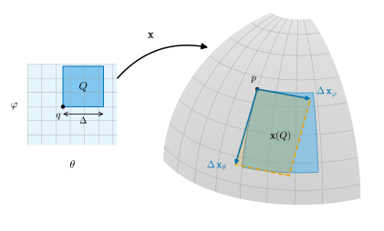
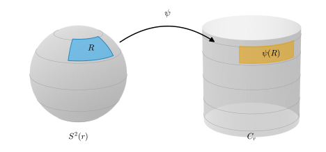

7.3 넓이
이 절의 목표
- 곡면 위 좌표 영역의 넓이와 함수의 적분을 \(\sqrt{EG - F^2}\)로 정의할 수 있다.
- 넓이가 매개화의 선택에 무관함을 변수변환 공식으로 증명할 수 있다.
- 구면, 원환면, 원기둥, 회전면의 넓이를 계산하고, 매개화 하나가 거의 다 덮는 곡면 전체의 넓이를 극한으로 이해할 수 있다.
- 등거리사상이 넓이를 보존함을 보이고, 넓이를 보존하지만 등거리사상이 아닌 예를 들 수 있다.
선수 지식
동기
7.1절과 7.2절에서 길이와 각을 제1기본형식으로 재고, 그것을 보존하는 사상을 보았다. 7장의 첫 질문 가운데 넓이가 남았다. 지구 표면에서 한 나라의 넓이는 어떻게 재는가?
평면에서는 영역을 작은 직사각형으로 나누고 넓이를 더했다(2.6절). 곡면에서도 매개화 \(\mathbf{x}\)로 좌표 칸을 만든다. 크기가 \(\Delta u \times \Delta v\)인 칸의 상은 굽어 있지만, 선형근사를 쓰면 두 변이 \(\Delta u\,\mathbf{x}_u\), \(\Delta v\,\mathbf{x}_v\)인 평행사변형과 거의 같다. 그 넓이는 \(\abs{\mathbf{x}_u \times \mathbf{x}_v}\,\Delta u\,\Delta v\)이다(정리 1.6.16(d)). 이것을 모두 더한 극한, 곧 \(\int\abs{\mathbf{x}_u \times \mathbf{x}_v}\,du\,dv\)를 넓이로 삼으면 된다. 그리고 (7.1.3)에 의해 피적분함수는 \(\sqrt{EG - F^2}\), 곧 제1기본형식만으로 정해진다.
남는 문제는 하나다. 매개화를 바꾸면 적분이 달라지지 않는가? 매개화에 따라 넓이가 달라진다면 그것은 곡면의 넓이라 부를 수 없다. 변수변환 공식이 이 문제를 해결한다. 2.6절의 예고 상자에서 미리 적어 둔 계획이다.

좌표 영역의 넓이
먼저 매개화를 바꿀 때 외적이 어떻게 변하는지 적어 둔다. 이 보조정리는 7.5절에서 방향을 다룰 때 다시 쓴다.
보조정리 7.3.1 (매개화를 바꿀 때 외적의 변환). 정리 6.3.1의 상황에서 \(h = \mathbf{x}^{-1} \circ \mathbf{y}\)이고 \(\mathbf{y}\)의 변수를 \((\bar u, \bar v)\)라 하면, 모든 \(\bar q \in \mathbf{y}^{-1}(W)\)에서
이다. 특히 \(\abs{\mathbf{y}_{\bar u} \times \mathbf{y}_{\bar v}} = \abs{\det Dh}\,\abs{\mathbf{x}_u \times \mathbf{x}_v} \circ h\)이다.
증명. \(h = (u(\bar u, \bar v), v(\bar u, \bar v))\)로 쓰면 (6.3.5)에서 \(\mathbf{y}_{\bar u} = u_{\bar u}\,\mathbf{x}_u + v_{\bar u}\,\mathbf{x}_v\), \(\mathbf{y}_{\bar v} = u_{\bar v}\,\mathbf{x}_u + v_{\bar v}\,\mathbf{x}_v\)이다. 외적의 쌍선형성과 \(\mathbf{x}_u \times \mathbf{x}_u = \mathbf{x}_v \times \mathbf{x}_v = 0\), \(\mathbf{x}_v \times \mathbf{x}_u = -\mathbf{x}_u \times \mathbf{x}_v\)(정리 1.6.16(a))에서
\[ \mathbf{y}_{\bar u} \times \mathbf{y}_{\bar v} = u_{\bar u}v_{\bar v}\,\mathbf{x}_u \times \mathbf{x}_v + v_{\bar u}u_{\bar v}\,\mathbf{x}_v \times \mathbf{x}_u = \big(u_{\bar u}v_{\bar v} - u_{\bar v}v_{\bar u}\big)\,\mathbf{x}_u \times \mathbf{x}_v \]
이고, 괄호 안이 \(\det Dh\)이다. 절댓값을 취하면 둘째 식이다.
넓이를 잴 집합은 “매개화 하나의 상 안에 들어 있고 경계가 얇은” 집합이다. 적분 영역(정의 2.6.6)을 매개화로 옮긴 것을 쓴다.
정의 7.3.2 (좌표 영역과 넓이, coordinate region and area). \(S\)가 정칙곡면이라 하자. 매개화 \(\mathbf{x}\colon U \to S\)와 폐포가 \(U\)에 포함되는 적분 영역 \(Q\)(\(\overline{Q} \subseteq U\))가 있어서 \(R = \mathbf{x}(Q)\)이면 \(R\)을 \(S\)의 좌표 영역(coordinate region)이라 한다. 그 넓이(area)를
로 정의한다. 또 \(\mathbf{x}(\overline{Q})\)에서 연속인 함수 \(f\)의 \(R\) 위의 적분을
로 정의한다. \(f = 1\)이면 \(A(R)\)이다.
피적분함수는 \(U\)에서 연속이고 \(\overline{Q}\)는 컴팩트하므로(유계 닫힌집합, 정리 3.6.7) 유계다. 따라서 정의 2.6.6에 의해 적분이 존재한다. 두 표현이 같은 것은 (7.1.3)이다. 기호 \(dA = \sqrt{EG - F^2}\,du\,dv\)를 매개화 \(\mathbf{x}\)의 넓이요소(area element)라 부른다. 이것은 “좌표 칸 \(du\,dv\)의 실제 넓이의 배율이 \(\sqrt{EG - F^2}\)”라는 뜻을 담은 기호이고, 계산에서는 (7.3.3)의 적분을 줄여 쓴 것으로만 쓴다. 따름정리 1.6.9로 말하면 \(\sqrt{EG - F^2}\)은 기저 \((\mathbf{x}_u, \mathbf{x}_v)\)의 그람 행렬식의 제곱근, 곧 두 벡터가 만드는 평행사변형의 넓이다.
예 7.3.3 (평면 영역과 원기둥 조각). (a) 평면 \(\{z = 0\}\)의 매개화 \(\iota(u, v) = (u, v, 0)\)은 \(E = G = 1\), \(F = 0\)이므로, 적분 영역 \(Q\)에 대해 \(A(\iota(Q)) = \int_Q 1 = \vol(Q)\)이다. 새 정의는 평면에서 정의 2.6.6의 넓이와 같다. 이름을 같이 쓸 자격이 있다.
(b) 원기둥의 기준 매개화는 \(E = r^2\), \(F = 0\), \(G = 1\)이므로(예 7.1.4) \(\sqrt{EG - F^2} = r\)이다. \(0 \lt a \lt b \lt 2\pi\)이면 \(R = \mathbf{x}([a, b] \times [c, d])\)는 좌표 영역이고, 푸비니 정리(정리 2.6.7)에서
\[ A(R) = \int_c^d\int_a^b r\,du\,dv = r(b - a)(d - c) \]
이다. 밑변이 호의 길이 \(r(b - a)\), 높이가 \(d - c\)인 “굽은 직사각형”의 넓이다.
검증: verify/v-7-3-area.py
정의에서 매개화를 요구한 이유 가운데 하나는 단사성이다. 단사가 아닌 사상으로 같은 적분을 하면 겹친 부분을 여러 번 센다.
비예 7.3.4 (단사가 아니면 두 번 센다). 원기둥의 기준 매개화와 같은 식 \(\mathbf{z}(u, v) = (r\cos u, r\sin u, v)\)를 \((0, 4\pi) \times \R\)에서 생각하자. \(\mathbf{z}\)는 매끄럽고 \(D\mathbf{z}\)가 단사이지만 \(\mathbf{z}(u + 2\pi, v) = \mathbf{z}(u, v)\)이므로 매개화가 아니다. \(Q = \big([\pi/2, 3\pi/2] \cup [5\pi/2, 7\pi/2]\big) \times [0, 1]\)은 적분 영역이고 \(\mathbf{z}(Q) = R\)는 예 7.3.3(b)의 좌표 영역 \(\mathbf{x}([\pi/2, 3\pi/2] \times [0, 1])\), 곧 넓이가 \(\pi r\)인 반원기둥 조각이다. 그런데 \(\int_Q \abs{\mathbf{z}_u \times \mathbf{z}_v} = \pi r + \pi r = 2\pi r\)이다. 두 직사각형이 같은 조각으로 가기 때문이다. 비예 2.6.12(a)의 곡면판이다.
검증: verify/v-7-3-area.py
이제 이 절의 중심 정리다. 증명은 정리 2.6.9(a)를 매개변수 변환에 쓰는 것인데, 그 정리의 가정 “폐포가 정의역 안에 있다”를 확인하는 단계가 필요하다.
정리 7.3.5 (넓이는 매개화에 무관하다). \(R\)이 두 매개화 \(\mathbf{x}\colon U \to S\), \(\mathbf{y}\colon \bar U \to S\)에 대해 좌표 영역이라 하자. 곧 \(\overline{Q} \subseteq U\), \(\overline{\bar Q} \subseteq \bar U\)인 적분 영역 \(Q\), \(\bar Q\)가 있어 \(R = \mathbf{x}(Q) = \mathbf{y}(\bar Q)\)라 하자. 그러면
\[ \int_Q \abs{\mathbf{x}_u \times \mathbf{x}_v}\,du\,dv = \int_{\bar Q} \abs{\mathbf{y}_{\bar u} \times \mathbf{y}_{\bar v}}\,d\bar u\,d\bar v \]
이다. \(\overline{R}\)에서 연속인 \(f\)에 대해서도 (7.3.3)의 두 적분이 같다. 따라서 \(A(R)\)과 \(\iint_R f\,dA\)는 매개화에 무관하다.
이 정리가 말하는 것. 넓이는 좌표를 어떻게 까느냐와 상관없이 곡면의 조각 자체에 속한 값이다. 이유는 두 가지가 정확히 상쇄되기 때문이다. 좌표를 바꾸면 넓이요소에 \(\abs{\det Dh}\)가 곱해지고(보조정리 7.3.1), 적분 변수를 바꾸면 \(\abs{\det Dh}\)로 나누어진다(변수변환 공식).
증명 아이디어: 매개변수 변환 \(h = \mathbf{x}^{-1} \circ \mathbf{y}\)가 \(\bar Q\)를 \(Q\)로 보내는 미분동형사상이므로 정리 2.6.9(a)를 쓴다. 가정 “\(\overline{\bar Q}\)가 \(h\)의 정의역 안에 있다”는 \(R\)의 폐포가 두 매개화의 상에 모두 들어 있다는 것에서 나온다.
증명. 1단계: \(R\)의 폐포. \(\overline{R}\)을 \(\R^3\)에서의 폐포라 하자. \(Q\)는 유계이므로 \(\overline{Q}\)는 유계 닫힌집합, 곧 컴팩트하고(정리 3.6.7), \(\mathbf{x}(\overline{Q})\)는 컴팩트 집합의 연속상이므로 컴팩트하다(명제 3.6.5(c)). 하우스도르프 공간 \(\R^3\)의 컴팩트 부분집합은 닫혀 있으므로(명제 3.6.5(b)) \(\mathbf{x}(\overline{Q})\)는 \(R\)을 포함하는 닫힌집합이고, 따라서 \(\overline{R} \subseteq \mathbf{x}(\overline{Q})\)이다. 거꾸로 \(q \in \overline{Q}\)이면 \(Q\)의 점으로 이루어진 수열 \(q_k \to q\)가 있고(명제 3.2.17(c)), \(\mathbf{x}(q_k) \in R\)이며 \(\mathbf{x}(q_k) \to \mathbf{x}(q)\)이므로(같은 명제 (a)) \(\mathbf{x}(q) \in \overline{R}\)이다. 곧 \(\overline{R} = \mathbf{x}(\overline{Q}) \subseteq \mathbf{x}(U)\)이다. 같은 방법으로 \(\overline{R} = \mathbf{y}(\overline{\bar Q}) \subseteq \mathbf{y}(\bar U)\)이다. 따라서 \(\overline{R} \subseteq W = \mathbf{x}(U) \cap \mathbf{y}(\bar U)\)이다.
2단계: 매개변수 변환. 정리 6.3.1에 의해 \(h = \mathbf{x}^{-1} \circ \mathbf{y}\colon \mathbf{y}^{-1}(W) \to \mathbf{x}^{-1}(W)\)는 열린집합 사이의 미분동형사상이다. 1단계에서 \(\mathbf{y}(\overline{\bar Q}) = \overline{R} \subseteq W\)이므로 \(\overline{\bar Q} \subseteq \mathbf{y}^{-1}(W)\)이다. 또 \(\mathbf{x}\)가 단사이므로 \(h(\bar Q) = \mathbf{x}^{-1}(\mathbf{y}(\bar Q)) = \mathbf{x}^{-1}(R) = Q\)이다.
3단계: 변수변환. \(g = \abs{\mathbf{x}_u \times \mathbf{x}_v}\)는 \(U\)에서, 특히 \(h(\overline{\bar Q}) = \overline{Q}\)에서 연속이다. 정리 2.6.9(a)를 \(F = h\), \(D = \bar Q\), 함수 \(g\)에 쓰고 보조정리 7.3.1을 쓰면
\[ \int_Q g = \int_{h(\bar Q)} g = \int_{\bar Q} (g \circ h)\,\abs{\det Dh} = \int_{\bar Q} \abs{\mathbf{y}_{\bar u} \times \mathbf{y}_{\bar v}} \]
이다. 함수 \(f\)가 있으면 \(g\) 대신 \((f \circ \mathbf{x})\,g\)를 쓴다. \((f \circ \mathbf{x}) \circ h = f \circ \mathbf{y}\)이므로 같은 계산이 된다.
예 7.3.6 (구면 조각). \(0 \lt \theta_1 \lt \theta_2 \lt \pi\), \(0 \lt \varphi_1 \lt \varphi_2 \lt 2\pi\)이면 \(R = \mathbf{x}([\theta_1, \theta_2] \times [\varphi_1, \varphi_2])\)는 구면의 좌표 영역이다. 예 7.1.2에서 \(\sqrt{EG - F^2} = \sqrt{r^4\sin^2\theta} = r^2\sin\theta\)(\(\sin\theta \gt 0\))이므로, 푸비니 정리에서
이다. 넓이요소 \(r^2\sin\theta\,d\theta\,d\varphi\)는 예 2.6.11에서 공의 부피를 구할 때 \(\rho = r\)로 고정한 “구면 위 넓이요소”로 미리 나왔다. 그때의 예고가 여기서 확인된다. (7.3.4)는 \(\theta\)에 \(\cos\theta = z/r\)을 통해서만 의존한다. 곧 넓이는 조각의 높이 차 \(r(\cos\theta_1 - \cos\theta_2)\)와 경도 폭 \(\varphi_2 - \varphi_1\)만으로 정해진다. 이 관찰은 예 7.3.12에서 다시 쓴다.
검증: verify/v-7-3-area.py
곡면 전체의 넓이
구면 전체는 좌표 영역이 아니다. 기준 매개화는 반원 \(C\)를 빠뜨리고, 폐포 조건 \(\overline{Q} \subseteq U\)를 만족하는 \(Q\)로는 \(U = (0, \pi) \times (0, 2\pi)\) 전체를 쓸 수 없다. 그러나 빠진 곳은 곡선뿐이고, 곡선은 넓이에 기여하지 않을 것이다. 예 2.6.10에서 원판의 넓이를 구할 때 “부피가 \(0\)인 가장자리를 떼어 내고 극한을 취한” 것과 같은 방법을 쓴다.
정의 7.3.7 (매개화 하나가 거의 덮는 집합의 넓이). \(R \subseteq S\)이고 매개화 \(\mathbf{x}\colon U \to S\)가 다음을 만족한다고 하자.
- (i) \(Q = \mathbf{x}^{-1}(R)\)은 적분 영역이다(\(\overline{Q} \subseteq U\)일 필요는 없다).
- (ii) \(\abs{\mathbf{x}_u \times \mathbf{x}_v}\)는 \(Q\)에서 유계다.
- (iii) \(R \setminus \mathbf{x}(U)\)는 유한개의 정칙곡선 \(\gamma_i\colon [a_i, b_i] \to S\)의 자취의 합집합에 포함된다.
이때 \(R\)의 넓이를 (7.3.2)와 같은 식 \(A(R) = \int_Q \abs{\mathbf{x}_u \times \mathbf{x}_v}\,du\,dv\)로 정의한다. \(R\)에서 유계이고 연속인 \(f\)에 대해 \(\iint_R f\,dA\)도 (7.3.3)의 식으로 정의한다.
(ii)와 (i)에서 피적분함수는 적분 영역 위의 유계 연속함수이므로 적분이 존재한다(정의 2.6.6). \(R\)이 \(\mathbf{x}\)에 대한 좌표 영역이면 (iii)의 집합이 비어 있고 값은 정의 7.3.2의 것과 같다. 이 정의가 합리적이라는 근거는 다음 명제다. 새 넓이는 안쪽의 좌표 영역들의 넓이의 극한이다.
명제 7.3.8 (안쪽에서의 근사). 정의 7.3.7의 상황에서 적분 영역 \(Q_n\)이 \(\overline{Q_n} \subseteq U\), \(Q_n \subseteq Q\), \(\vol(Q \setminus Q_n) \to 0\)을 만족하면 \(R_n = \mathbf{x}(Q_n)\)은 \(R\) 안의 좌표 영역이고 \(A(R_n) \to A(R)\)이다.
증명. \(R_n\)이 좌표 영역인 것은 정의 그대로다. \(M\)을 \(Q\)에서 \(\abs{\mathbf{x}_u \times \mathbf{x}_v}\)의 상계라 하자. \(Q \setminus Q_n\)은 유계이고 경계가 \(\partial Q \cup \partial Q_n\)에 포함되므로 적분 영역이다. 적분의 가법성과 단조성(정의 2.6.6 뒤)에서
\[ 0 \le A(R) - A(R_n) = \int_{Q \setminus Q_n} \abs{\mathbf{x}_u \times \mathbf{x}_v} \le M\,\vol(Q \setminus Q_n) \to 0 \]
이다.
비고 7.3.9 (거의 덮는 매개화의 선택). 정의 7.3.7의 값은 조건 (i)–(iii)을 만족하는 매개화 \(\mathbf{x}\)의 선택에 무관하다. 이 study set은 이 사실을 증명 스케치로만 둔다. 스케치: 두 매개화 \(\mathbf{x}\), \(\mathbf{y}\)가 조건을 만족한다고 하자. \(R\) 가운데 \(W = \mathbf{x}(U) \cap \mathbf{y}(\bar U)\) 밖에 있는 부분은 (iii)의 곡선들의 자취에 포함된다. 그 자취의 \(\mathbf{x}\)에 의한 원상은 평면의 매끄러운 곡선 조각들이고, 그런 조각은 부피가 \(0\)이다(예 2.6.3). 그러므로 두 적분은 각각 \(\mathbf{x}^{-1}(R \cap W)\)와 \(\mathbf{y}^{-1}(R \cap W)\) 위의 적분과 같고, 이 두 집합은 매개변수 변환으로 서로 옮겨 가므로 정리 7.3.5와 명제 7.3.8의 극한 논법으로 같은 값을 준다. 곡선 조각이 \(U\)의 경계로 다가가는 부분을 다루는 세부는 생략한다. 곡면 전체의 적분을 매개화에 무관하게 정의하는 일반적인 방법은 12장의 단위분할을 써서 18장에서 한다.
예 7.3.10 (구면과 원환면의 넓이). (a) 구면. \(R = S^2(r)\), \(\mathbf{x}\)는 기준 매개화라 하자. \(Q = \mathbf{x}^{-1}(S^2(r)) = U = (0, \pi) \times (0, 2\pi)\)는 적분 영역이고, \(\abs{\mathbf{x}_\theta \times \mathbf{x}_\varphi} = r^2\sin\theta \le r^2\)이며, 빠진 반원 \(C\)는 정칙곡선 \(\gamma(t) = (r\sin t, 0, r\cos t)\), \(t \in [0, \pi]\)의 자취다(\(\abs{\gamma'} = r\)). 정의 7.3.7에서
\[ A\big(S^2(r)\big) = \int_0^{2\pi}\int_0^\pi r^2\sin\theta\,d\theta\,d\varphi = r^2 \cdot 2\pi \cdot \big[-\cos\theta\big]_0^\pi = 4\pi r^2 \]
이다. 명제 7.3.8로 보면 \(Q_n = [1/n,\ \pi - 1/n] \times [1/n,\ 2\pi - 1/n]\)의 상의 넓이 \(r^2(2\pi - 2/n)\cdot 2\cos(1/n)\)가 \(4\pi r^2\)으로 간다.
(b) 원환면. 원환면 전체 \(T_{R,r}\)와 기준 매개화의 정의역 \(U = (0, 2\pi)^2\)에 정의 7.3.7을 쓰자. 예 7.1.5에서 \(\sqrt{EG - F^2} = r(R + r\cos u) \le r(R + r)\)이고, 빠진 곳은 원 두 개(\(u = 0\)과 \(v = 0\), 예 6.5.8)다. 따라서
\[ A(T_{R,r}) = \int_0^{2\pi}\int_0^{2\pi} r(R + r\cos u)\,du\,dv = 2\pi\big(2\pi rR + r^2[\sin u]_0^{2\pi}\big) = 4\pi^2Rr \]
이다. 연습 2.6.6에서 원환면이 둘러싼 입체의 부피가 \(V(r) = 2\pi^2Rr^2\)임을 보았다. \(dV/dr = 4\pi^2Rr\)는 넓이와 같다. 관의 반지름을 \(dr\)만큼 늘리면 부피가 대략 “겉넓이 × \(dr\)”만큼 늘어난다는 뜻이다. 구면에서도 \(\tfrac{d}{dr}\tfrac43\pi r^3 = 4\pi r^2\)이다.
(c) 구면 띠. \(0 \le \theta_1 \lt \theta_2 \le \pi\)일 때 \(R = \{p \in S^2(r) : r\cos\theta_2 \le z \le r\cos\theta_1\}\)이라 하자(\(\theta_1 = 0\)이면 극관이다). \(Q = \mathbf{x}^{-1}(R)\)은 \(\theta_1 \le \theta \le \theta_2\), \(0 \lt \varphi \lt 2\pi\)인 점들이고(\(\theta_1 = 0\)이나 \(\theta_2 = \pi\)이면 그 끝은 열려 있다) 적분 영역이다. \(R \setminus \mathbf{x}(U)\)는 \(C\)의 호다. (7.3.4)와 같은 계산으로
\[ A(R) = 2\pi r^2(\cos\theta_1 - \cos\theta_2) = 2\pi r\,h, \qquad h = r(\cos\theta_1 - \cos\theta_2) \]
이다. \(h\)는 띠의 높이다. 같은 높이의 띠는 구면의 어디에 있든 넓이가 같다(아르키메데스).
검증: verify/v-7-3-area.py
넓이를 보존하는 사상
등거리사상은 제1기본형식을 보존하므로 넓이요소도 보존할 것이다.
명제 7.3.11 (등거리사상은 넓이를 보존한다). \(\varphi\colon S_1 \to S_2\)가 등거리사상이고 \(R\)이 \(S_1\)의 좌표 영역이면 \(\varphi(R)\)는 \(S_2\)의 좌표 영역이고 \(A(\varphi(R)) = A(R)\)이다. 또 \(\overline{\varphi(R)}\)에서 연속인 \(f\)에 대해 \(\iint_{\varphi(R)} f\,dA = \iint_R (f \circ \varphi)\,dA\)이다.
증명. \(R = \mathbf{x}(Q)\), \(\overline{Q} \subseteq U\)라 하자. 따름정리 7.2.8(b)에 의해 \(\mathbf{y} = \varphi \circ \mathbf{x}\)는 \(S_2\)의 매개화이고 계수가 \(\mathbf{x}\)의 계수와 같다. \(\varphi(R) = \mathbf{y}(Q)\)이므로 좌표 영역이고, (7.3.2)의 두 피적분함수 \(\sqrt{EG - F^2}\)이 같으므로 넓이가 같다. 적분은 \(f \circ \mathbf{y} = (f \circ \varphi) \circ \mathbf{x}\)이므로 같다.
예를 들어 예 7.2.9의 등거리사상 \(\varphi|_{P_0}\)는 평면의 직사각형 \([ra, rb] \times [c, d]\)를 원기둥의 조각 \(\mathbf{x}([a, b] \times [c, d])\)로 보내고, 두 넓이는 모두 \(r(b - a)(d - c)\)이다(예 7.3.3). 역은 성립하지 않는다.
예 7.3.12 (아르키메데스의 투영: 넓이는 보존하지만 등거리사상이 아니다). 구면 \(S^2(r)\)에서 두 극과 반원 \(C\)를 뺀 부분 \(\mathbf{x}(U)\)의 점을 \(z\)축에서 수평으로 바깥쪽으로 밀어 외접 원기둥 \(C_r\)로 보내는 사상을 \(\psi\)라 하자. 곧 \(\psi(x, y, z) = \big(rx/\sqrt{x^2 + y^2},\ ry/\sqrt{x^2 + y^2},\ z\big)\)이고, 기준 매개화로 쓰면
\[ \mathbf{y}(\theta, \varphi) = \psi\big(\mathbf{x}(\theta, \varphi)\big) = (r\cos\varphi,\ r\sin\varphi,\ r\cos\theta) \]
이다. 이것은 원기둥의 기준 매개화에 \((\theta, \varphi) \mapsto (\varphi, r\cos\theta)\)를 합성한 것이고, 이 변환은 \((0, \pi) \times (0, 2\pi)\)에서 \((0, 2\pi) \times (-r, r)\) 위로 가는 미분동형사상이므로 \(\mathbf{y}\)는 원기둥의 매개화다. \(\mathbf{y}_\theta = (0, 0, -r\sin\theta)\), \(\mathbf{y}_\varphi = (-r\sin\varphi, r\cos\varphi, 0)\)이므로 \(\bar E = r^2\sin^2\theta\), \(\bar F = 0\), \(\bar G = r^2\)이고
\[ \sqrt{\bar E\bar G - \bar F^2} = r^2\sin\theta = \sqrt{EG - F^2} \]
이다. 따라서 \(\mathbf{x}(U)\) 안의 모든 좌표 영역 \(R = \mathbf{x}(Q)\)에 대해 \(\psi(R) = \mathbf{y}(Q)\)의 넓이는 \(A(R)\)과 같다. (7.3.4)에서 본 “넓이는 높이 차로만 정해진다”는 것이 이것이다(그림 7.3.2). 그러나 \(\bar E = r^2\sin^2\theta \neq r^2 = E\)(적도 \(\theta = \pi/2\) 밖)이므로 정리 7.2.7에 의해 \(\psi\)는 어떤 열린집합에서도 국소 등거리사상이 아니다. 극 근처의 경선 방향은 \(\sin\theta\)배로 줄고 위도원 방향은 \(1/\sin\theta\)배로 늘어서, 모양은 찌그러지지만 넓이는 그대로다.
검증: verify/v-7-3-area.py

요약
- 좌표 영역 \(R = \mathbf{x}(Q)\)(\(Q\)는 폐포가 \(U\)에 들어가는 적분 영역)의 넓이는 \(\int_Q \abs{\mathbf{x}_u \times \mathbf{x}_v} = \int_Q \sqrt{EG - F^2}\)이다. 넓이요소 \(\sqrt{EG - F^2}\)은 제1기본형식만으로 정해진다.
- 매개화를 바꾸면 외적이 \(\det Dh\)배가 되고(보조정리 7.3.1), 변수변환 공식이 그것을 상쇄하므로 넓이는 매개화에 무관하다(정리 7.3.5).
- 매개화 하나가 곡선 몇 개를 빼고 다 덮는 집합의 넓이는 같은 적분으로 정의하고, 안쪽 좌표 영역들의 넓이의 극한과 같다. 구면은 \(4\pi r^2\), 원환면은 \(4\pi^2Rr\), 높이 \(h\)인 구면 띠는 \(2\pi rh\)이다.
- 등거리사상은 넓이를 보존한다. 역은 거짓이다. 아르키메데스의 투영은 넓이를 보존하지만 길이를 보존하지 않는다.
다음 절에서는 길이는 보존하지 않지만 각은 보존하는 사상, 곧 등각사상을 다룬다. 넓이를 보존하는 지도(아르키메데스)가 있듯이 각을 보존하는 지도도 있는가? 입체사영과 메르카토르 지도가 그 답이다.
연습문제
연습 7.3.1 ★ \(f\colon \Omega \to \R\)가 매끄럽고 \(Q\)가 \(\overline{Q} \subseteq \Omega\)인 적분 영역일 때, 그래프 \(\Gamma(f)\)의 조각 \(R = \{(u, v, f(u, v)) : (u, v) \in Q\}\)의 넓이가 그림자 \(Q\)의 넓이 이상임을 보이고, 등호가 성립할 조건을 구하여라. 포물면 \(z = x^2 + y^2\)에서 \(x^2 + y^2 \le a^2\)인 부분의 넓이를 구하여라. [dC §2-5 연습문제 5 변형]
풀이
연습 7.1.1에서 그래프 매개화의 \(EG - F^2 = 1 + f_u^2 + f_v^2\)이므로 \(A(R) = \int_Q\sqrt{1 + f_u^2 + f_v^2} \ge \int_Q 1 = \vol(Q)\)이다. 등호이면 연속함수 \(\sqrt{1 + f_u^2 + f_v^2} - 1 \ge 0\)의 적분이 \(0\)이므로 \(Q\)의 내점마다 이 함수가 \(0\)이다(내점에서 양수이면 그 둘레의 작은 정사각형 위의 적분이 양수다). 곧 \(Q\)의 내부에서 \(f_u = f_v = 0\)이다. 거꾸로 그러면 등호다. 기울어진 곳이 있으면 곡면이 그림자보다 넓다.
포물면에서 \(f_u^2 + f_v^2 = 4(u^2 + v^2)\)이다. 예 2.6.10의 극좌표 계산을 쓰면(\(\rho^2 = u^2 + v^2\))
\[ A = \int_0^{2\pi}\int_0^a \sqrt{1 + 4\rho^2}\,\rho\,d\rho\,d\varphi = 2\pi\cdot\frac{1}{12}\Big[(1 + 4\rho^2)^{3/2}\Big]_0^a = \frac{\pi}{6}\Big((1 + 4a^2)^{3/2} - 1\Big) \]
이다. (\(a \to 0\)이면 \(\pi a^2 + O(a^4)\)로 그림자의 넓이에 가까워진다.)
검증: verify/v-7-3-area.py
연습 7.3.2 ★ 원기둥 \(C_r\)의 띠 \(\{0 \le z \le h\}\)의 넓이를 정의 7.3.7로 구하여라. 또 평면의 극좌표 매개화(예 7.1.8)의 넓이요소를 구하고 예 2.6.10과 비교하여라.
풀이
기준 매개화에서 \(Q = \mathbf{x}^{-1}(\text{띠}) = (0, 2\pi) \times [0, h]\)는 적분 영역이고, \(\abs{\mathbf{x}_u \times \mathbf{x}_v} = r\)은 유계이며, 빠진 곳은 선분 \(\{(r, 0, z) : 0 \le z \le h\}\)(정칙곡선의 자취)이다. 따라서 넓이는 \(\int_0^h\int_0^{2\pi} r\,du\,dv = 2\pi rh\)이다. 극좌표 매개화는 \(\bar E = 1\), \(\bar F = 0\), \(\bar G = \rho^2\)이므로 넓이요소는 \(\sqrt{\rho^2}\,d\rho\,d\varphi = \rho\,d\rho\,d\varphi\)이다. 예 2.6.10의 \(dx\,dy = r\,dr\,d\theta\)와 같다. 평면에서는 새 넓이가 옛 넓이와 같으므로(예 7.3.3(a)) 당연한 일이다.
검증: verify/v-7-3-area.py
연습 7.3.3 ★ 참인지 거짓인지 판별하고 이유를 대어라. (a) 좌표 영역의 넓이는 매개화에 따라 달라질 수 있다. (b) 넓이요소는 언제나 \(\abs{\mathbf{x}_u}\,\abs{\mathbf{x}_v}\,du\,dv\)이다. (c) 넓이를 보존하는 미분동형사상은 등거리사상이다. (d) 좌표 영역의 넓이는 \(0\)보다 크거나 같고, \(Q\)의 부피가 양수이면 양수다.
풀이
(a) 거짓. 정리 7.3.5.
(b) 거짓. \(\sqrt{EG - F^2} = \abs{\mathbf{x}_u}\abs{\mathbf{x}_v}\sin\vartheta_{uv}\)이므로 \(F = 0\)인 점에서만 성립한다. 연습 7.1.3의 매개화에서는 \(\sqrt{\bar E\bar G - \bar F^2} = r^2\sin s \lt r^2\sin s\sqrt{1 + \sin^2 s} = \abs{\mathbf{y}_s}\abs{\mathbf{y}_t}\)이다.
(c) 거짓. 예 7.3.12의 아르키메데스의 투영.
(d) 참. 피적분함수가 양수이고 연속이므로 \(\overline Q\)에서 양의 최솟값 \(m\)을 가지며(정리 3.6.10) \(A(R) \ge m\,\vol(Q)\)이다.
연습 7.3.4 ★ 회전면의 조각 \(R = \mathbf{x}([a, b] \times [v_1, v_2])\)(예 7.1.6)의 넓이를 생성곡선 \(\alpha = (\rho, z)\)로 나타내어라. 이것으로 현수면의 \(\abs{z} \le 1\)인 부분의 넓이를 구하고, 그것을 허리 원(반지름 \(1\))을 따라 세운 높이 \(2\)의 원기둥 띠의 넓이 \(4\pi\)와 비교하여라. [dC §2-5 연습문제 11 변형]
풀이
(7.1.4)에서 \(EG - F^2 = \rho^2\abs{\alpha'}^2\)이므로 \(A(R) = (v_2 - v_1)\int_a^b \rho(u)\abs{\alpha'(u)}\,du\)이다. 한 바퀴 전체(\(v_2 - v_1 \to 2\pi\), 정의 7.3.7)이면 \(2\pi\int_a^b \rho\,\abs{\alpha'}\,du\)이다. 곧 “생성곡선의 각 점이 그리는 원의 둘레 \(2\pi\rho\)를 생성곡선의 길이를 따라 적분한 것”이다. 현수면은 \(\rho = \cosh u\), \(\abs{\alpha'} = \cosh u\)이므로 넓이는 \(2\pi\int_{-1}^1\cosh^2 u\,du = \pi\int_{-1}^1(1 + \cosh 2u)\,du = \pi(2 + \sinh 2) \approx 17.68\)이다. 원기둥 띠의 넓이 \(4\pi \approx 12.57\)보다 크다. 현수면은 위아래로 갈수록 반지름이 커지기 때문이다(\(\cosh u \ge 1\)).
검증: verify/v-7-3-area.py
연습 7.3.5 ★★ (넓이요소의 뜻) \(q \in U\)이고 \(\varepsilon \gt 0\)이 작아서 정사각형 \(Q_\varepsilon = q + [0, \varepsilon]^2\)의 폐포가 \(U\)에 들어간다고 하자. \(\lim_{\varepsilon \to 0} A(\mathbf{x}(Q_\varepsilon))/\varepsilon^2 = \sqrt{EG - F^2}\,(q)\)임을 보여라. 또 \(\mathbf{x}(Q_\varepsilon)\)의 넓이와 \(\mathbf{x}(q)\)에 붙인 평행사변형(두 변 \(\varepsilon\,\mathbf{x}_u(q)\), \(\varepsilon\,\mathbf{x}_v(q)\))의 넓이의 비가 \(1\)로 감을 보여라(그림 7.3.1).
풀이
\(g = \sqrt{EG - F^2}\)는 \(q\)에서 연속이다. \(\eta \gt 0\)이 주어지면 \(\delta \gt 0\)이 있어 \(\abs{q' - q} \lt \delta\)일 때 \(\abs{g(q') - g(q)} \lt \eta\)이다. \(\sqrt2\,\varepsilon \lt \delta\)이면 \(Q_\varepsilon\)의 모든 점이 그 범위에 있으므로
\[ \Big\lvert A(\mathbf{x}(Q_\varepsilon)) - g(q)\,\varepsilon^2\Big\rvert = \Big\lvert\int_{Q_\varepsilon}\big(g - g(q)\big)\Big\rvert \le \eta\,\varepsilon^2 \]
이다. 양변을 \(\varepsilon^2\)으로 나누면 첫 주장이다. 평행사변형의 넓이는 \(\abs{\varepsilon\,\mathbf{x}_u \times \varepsilon\,\mathbf{x}_v} = g(q)\,\varepsilon^2\)이고 \(g(q) \gt 0\)이므로((7.1.3)) 비는 \(A(\mathbf{x}(Q_\varepsilon))/(g(q)\varepsilon^2) \to 1\)이다. 구면에서 \(q = (\pi/3, 1)\)이면 \(A = \varepsilon r^2(\cos\tfrac\pi3 - \cos(\tfrac\pi3 + \varepsilon))\)이고, \(\varepsilon \to 0\)이면 \(A/\varepsilon^2 \to r^2\sin\tfrac\pi3\)으로 확인된다.
검증: verify/v-7-3-area.py
연습 7.3.6 ★★ \(0 \lt \theta_0 \lt \pi/2\)일 때 구면의 극관 \(\{p \in S^2(r) : z \ge r\cos\theta_0\}\)의 넓이를 두 가지 매개화로 구하여라. 하나는 기준 매개화(정의 7.3.7), 다른 하나는 위쪽 반구의 그래프 매개화 \((u, v, \sqrt{r^2 - u^2 - v^2})\)이다. 두 값이 같음을 확인하여라.
풀이
기준 매개화. 극관의 원상은 \(Q = (0, \theta_0] \times (0, 2\pi)\)이고 빠진 곳은 북극과 \(C\)의 호다. 예 7.3.10(c)에서 \(\theta_1 = 0\), \(\theta_2 = \theta_0\)으로 두면 넓이는 \(2\pi r^2(1 - \cos\theta_0)\)이다.
그래프 매개화. 극관은 원판 \(\bar B = \{u^2 + v^2 \le r^2\sin^2\theta_0\}\) 위의 그래프이고 \(\bar B\)는 정의역 \(\{u^2 + v^2 \lt r^2\}\) 안에 있으므로 좌표 영역이다. \(f = \sqrt{r^2 - u^2 - v^2}\)이면 \(f_u = -u/f\), \(f_v = -v/f\)이므로 \(1 + f_u^2 + f_v^2 = (f^2 + u^2 + v^2)/f^2 = r^2/(r^2 - u^2 - v^2)\)이다(연습 7.1.1). 극좌표로
\[ A = \int_0^{2\pi}\int_0^{r\sin\theta_0}\frac{r\rho}{\sqrt{r^2 - \rho^2}}\,d\rho\,d\varphi = 2\pi r\Big[-\sqrt{r^2 - \rho^2}\Big]_0^{r\sin\theta_0} = 2\pi r\,(r - r\cos\theta_0) \]
이다(\(0 \lt \theta_0 \lt \pi/2\)에서 \(\sqrt{r^2 - r^2\sin^2\theta_0} = r\cos\theta_0\)). 두 값이 같다. 기준 매개화 쪽은 좌표 영역이 아니라서 정리 7.3.5가 직접 적용되지 않지만, 값은 비고 7.3.9대로 같다.
검증: verify/v-7-3-area.py
연습 7.3.7 ★★★ 미분동형사상 \(\varphi\colon S_1 \to S_2\)가 모든 좌표 영역의 넓이를 보존할 필요충분조건은, \(S_1\)의 모든 매개화 \(\mathbf{x}\)에 대하여 \(\mathbf{y} = \varphi \circ \mathbf{x}\)의 계수가 \(\bar E\bar G - \bar F^2 = EG - F^2\)을 만족하는 것임을 보여라. 이 조건은 \(\mathrm{I}\)의 계수가 아니라 그 행렬식만의 조건이다.
힌트
\(\mathbf{y}\)가 매개화임은 따름정리 7.2.8(b)의 증명과 같다. (⇒)에는 연습 7.3.5의 극한을 양쪽에 쓴다.
풀이
\(\varphi\)가 미분동형사상이므로 \(\mathbf{y} = \varphi \circ \mathbf{x}\)는 \(S_2\)의 매개화다(따름정리 7.2.8(b)의 증명에서 등거리라는 가정은 계수 비교에만 쓰였다). 좌표 영역 \(R = \mathbf{x}(Q)\)의 상은 좌표 영역 \(\varphi(R) = \mathbf{y}(Q)\)이다.
(⇐) \(A(\varphi(R)) = \int_Q\sqrt{\bar E\bar G - \bar F^2} = \int_Q\sqrt{EG - F^2} = A(R)\)이다.
(⇒) \(q \in U\)와 연습 7.3.5의 정사각형 \(Q_\varepsilon\)을 잡자. 가정에서 \(A(\mathbf{y}(Q_\varepsilon)) = A(\mathbf{x}(Q_\varepsilon))\)이다. 양변을 \(\varepsilon^2\)으로 나누고 \(\varepsilon \to 0\)으로 보내면 연습 7.3.5를 \(\mathbf{y}\)와 \(\mathbf{x}\)에 각각 써서 \(\sqrt{\bar E\bar G - \bar F^2}\,(q) = \sqrt{EG - F^2}\,(q)\)이다. \(q\)가 임의이므로 원하는 등식이다. 예 7.3.12는 행렬식은 같지만 \(\bar E \neq E\)인 경우다. 등거리사상은 세 계수가 모두 같아야 하므로(정리 7.2.7) 넓이 보존보다 훨씬 강한 조건이다.